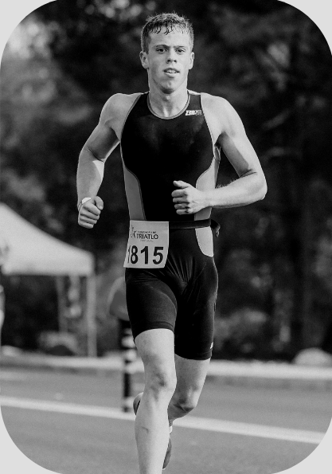

¡AJÚSTATE LOS CORDONES, Y A CORRER!
Prepárese para el Maratón de Valencia, uno de los mayores maratones de la región. Guía a los corredores a través de un desafiante y pintoresco recorrido por las montañas, dando la vuelta para pasar por algunos de los monumentos históricos de la ciudad antes de la línea de meta en el paseo Marítimo.
Va a ser emocionante, ¡así que más vale que estés preparado para correr este agosto!
INFORMACIÓN BÁSICA